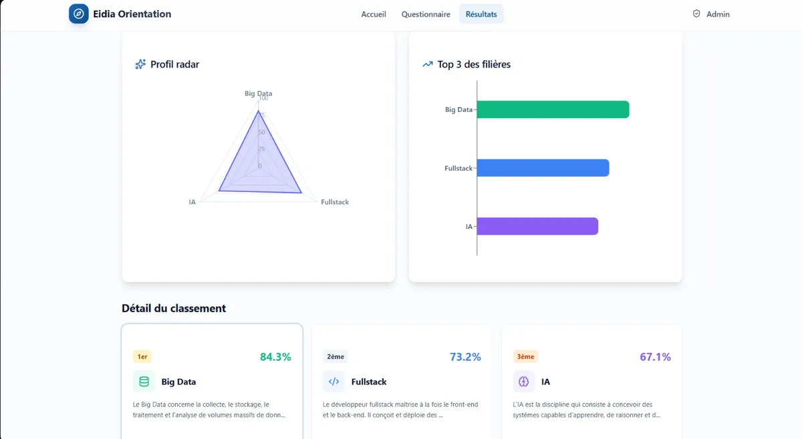

Eidia Orientation
A questionnaire that helps students find the engineering track that fits them.
Choosing between Full-stack, Cybersecurity, Big Data, AI and Robotics is hard when you've seen none of them up close. Eidia Orientation turns a student's skills, interests and personality into a ranked recommendation they can understand.

Identity, programming, maths, technical skills, personality, preferences.
Every answer adds points to one or more of the five tracks.
A top three with a compatibility score and what each track leads to.
Submissions, overall statistics and deletion of entries.
01Problem
Five tracks, one decision, very little information.
Students have to commit to a specialisation (Full-stack, Cybersecurity, Big Data, Artificial Intelligence or Robotics) early, often based on what friends chose or what sounds promising. The goal was a tool that starts from the student, not from the tracks.
02Approach
Score the profile, then explain the result.
- Six short steps instead of one long form: identity, programming, mathematics, technical skills, personality and preferences.
- Explicit weights. Each answer contributes points to the tracks it relates to. A strong interest in networks counts for Cybersecurity, probability and statistics count for Big Data and AI, electronics for Robotics. The weights are documented in a separate reference file.
- Personality as an option. Students can add their MBTI type, either precisely (16 types) or by family (NT, NF, SJ, SP), without it being required.
- Results people can read. A top three with compatibility percentages, a description of each track and the jobs it leads to.
03Build
A single-page app with a separate scoring engine.
The questions and the scoring rules live in their own modules, apart from the interface, so the weights can be adjusted without touching a screen. Pages: home, questionnaire, results and a protected admin area with submissions and statistics.
Submissions are stored in the browser (localStorage) with a unique student ID, which keeps the demo free to host on GitHub Pages.
04Technologies
The stack.
- Framework
- React 19 + TypeScript
- Build
- Vite
- Styling
- Tailwind CSS, shadcn/ui
- Motion & routing
- Framer Motion, React Router
- Hosting
- GitHub Pages
05Real outcome
A working demo, online.
The questionnaire, the scoring engine, the results and the admin area all work in the live demo. Anyone can take the questionnaire and get a recommendation.
What it isn't, yet. This is a demo, not a production system: data stays in the visitor's browser, there is no shared database, and no usage figures are claimed here. A real deployment would need a server-side store and proper authentication for the admin.
06Visuals
Screens from the live demo.

An idea for an app?
Let’s look at it together.
If you have an idea for a web application, I'd like to hear it, even if it's still rough.
Work together